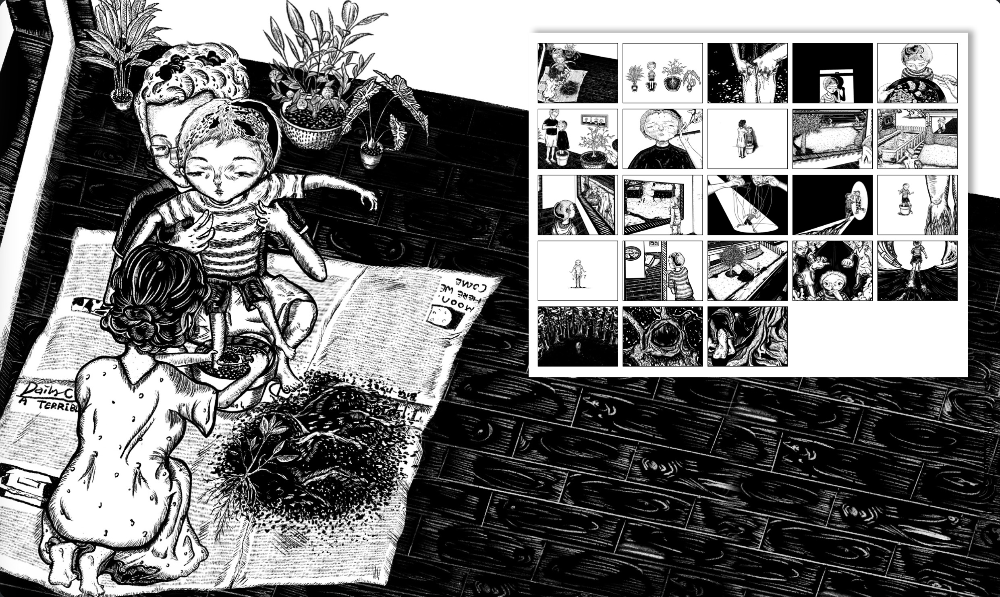
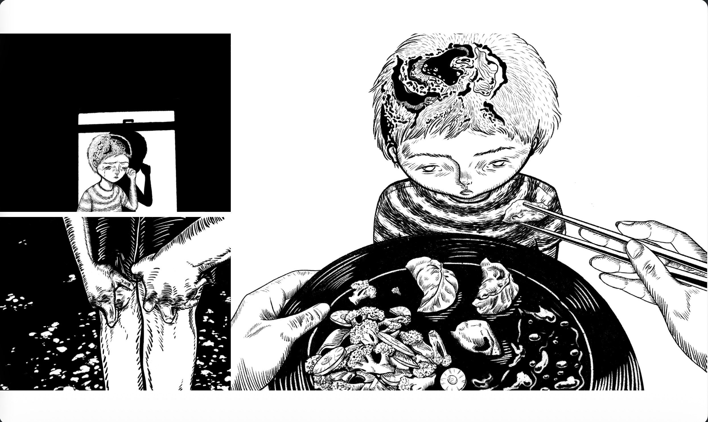
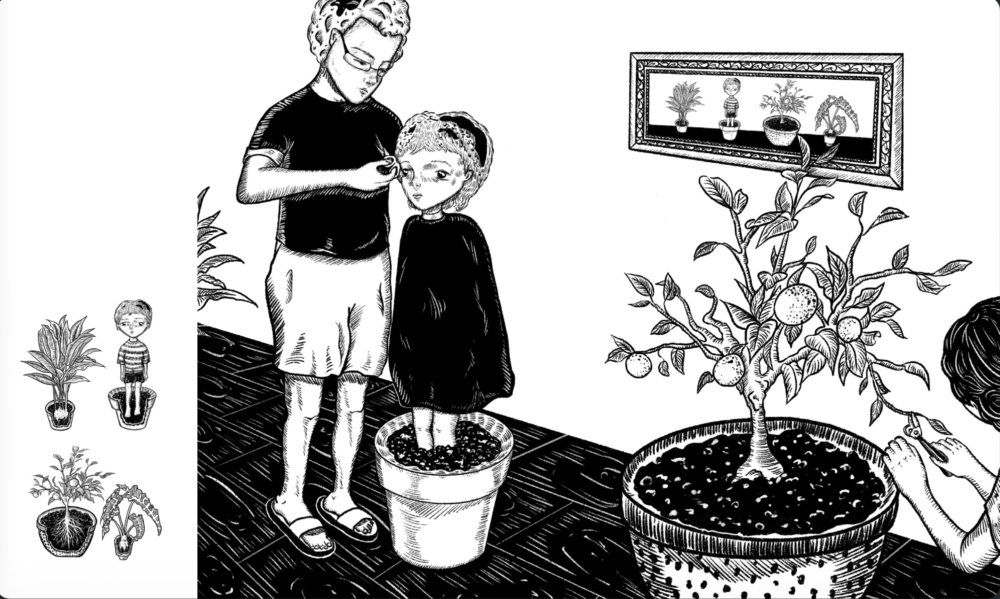
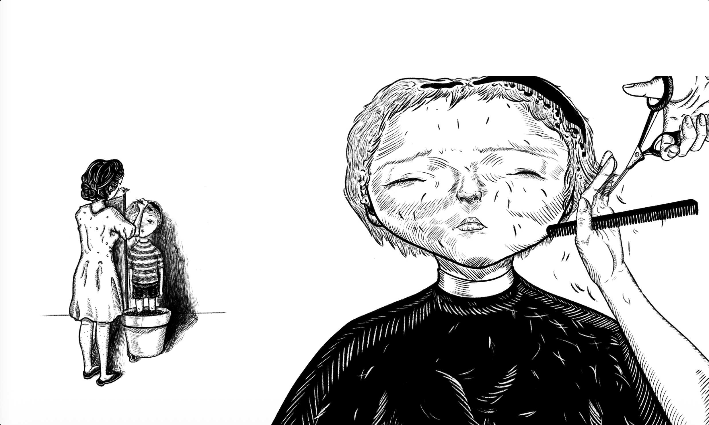

EYE 你
Love, an abstract concept, has varied ways of expression. The picture book illustrates a distorted love. For insuring the child’s safety, parents plant their child in a flowerpot. The title, Eye 你, has two meanings. First, it has a similar pronunciation of 爱你, which means love you. Meanwhile, it refers somebody keep watching you.
More views


